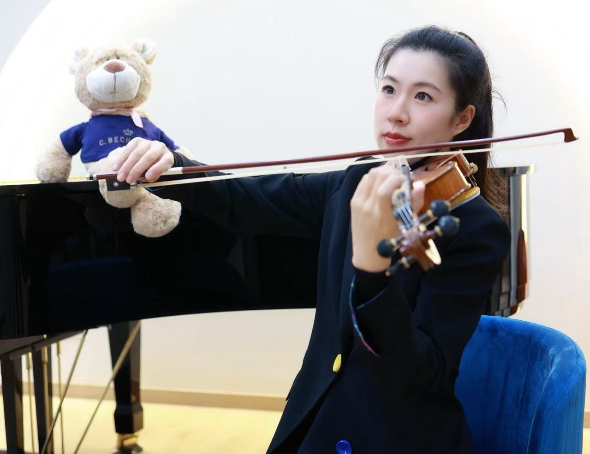
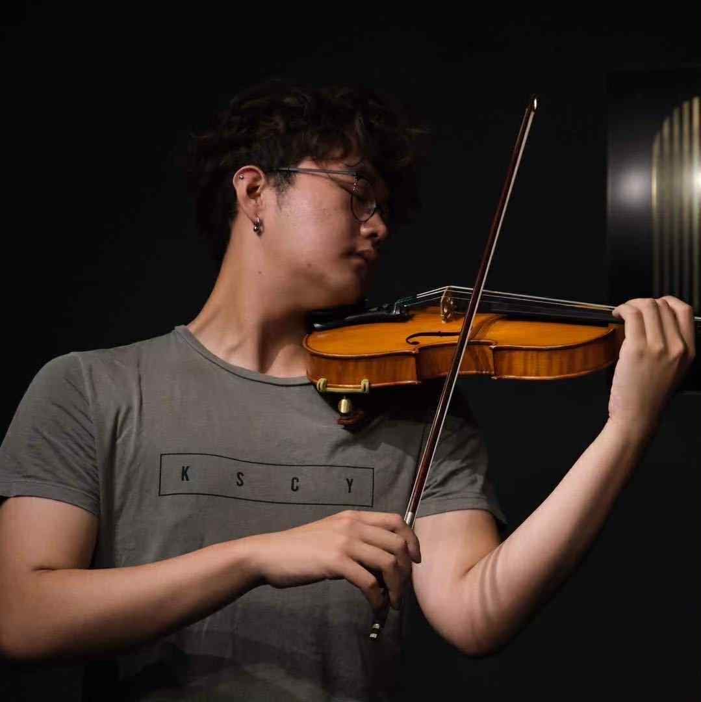
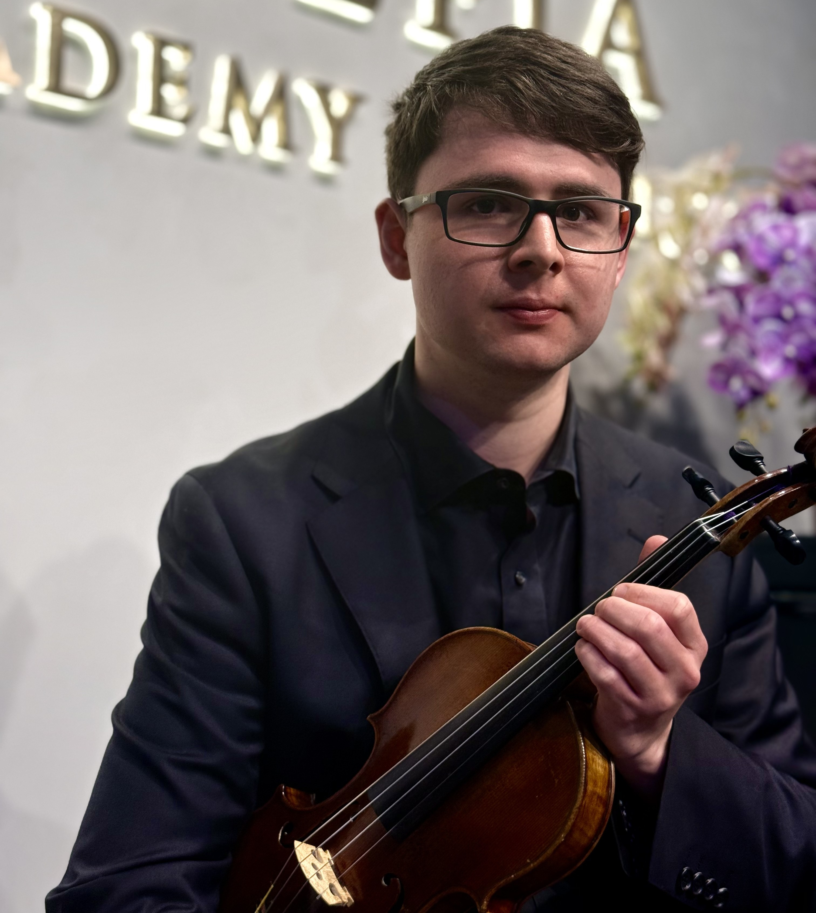

Christian Qi (祁浩田)
Baritone | Principal Artist at Opera Australia | International Vocal Coach
Christian Qi is an acclaimed Chinese-Australian baritone and principal artist with Opera Australia, frequently featured on the stage of the Sydney Opera House and other leading venues across the country. With a powerful voice, commanding presence, and exceptional musicality, he has captivated audiences throughout Europe, China, and Oceania.
A winner of numerous international voice competitions — including First Prize at the Theodor Leschetizky International Music Competition (Austria) and top honors in Italy and the Asia-Pacific region — Christian is recognised for his refined technique, deep emotional expression, and stylistic versatility in both operatic and concert repertoire.
He earned his Master’s degree in Opera Performance from the Sydney Conservatorium of Music, where he studied under distinguished vocal mentors and developed his distinctive interpretive style. As a performer, he has taken on leading roles in classical operas, art songs, sacred works, and contemporary productions, winning praise for his ability to embody both character and voice with authenticity.
As an educator, Christian brings a rigorous yet nurturing approach to vocal instruction. He works with students of all levels — from beginners seeking healthy vocal habits, to advanced singers preparing for AMEB exams, competitions, or professional stage careers. His lessons integrate technical foundations, musical phrasing, dramatic delivery, and real-world performance skills.
At Clefia, Christian leads the vocal and musical theatre programs, helping students find not only their voice, but their artistic identity.
“Singing is not simply about sound — it is about truth. When a voice is free, the soul speaks.”

Dr. Bai Jie
Coloratura Soprano | Doctor of Musical Arts | Voice Educator
Dr. Bai Jie is a lyrical coloratura soprano and experienced vocal pedagogue with a Doctor of Musical Arts from the Chopin Music Academy in Poland. She also holds Bachelor’s and Master’s degrees in vocal performance from the Estonian Academy of Music and Theatre.
With a career spanning Europe and China, she has performed in operas, recitals, and international festivals, and is known for her refined technique and expressive artistry.
As a dedicated educator with extensive university teaching experience, Dr. Bai specialises in classical vocal training, stage interpretation, and multilingual diction. Her students have excelled in competitions, scholarships, and conservatory programs.
“Through voice, we not only project sound — we reveal character, emotion, and truth.”

Dr. Shufang Zhang
Concert Pianist | PhD in Piano Performance | International Music Educator
Dr. Shufang Zhang is a distinguished concert pianist and scholar with a Doctor of Philosophy in Piano Performance, and over 15 years of international teaching and stage experience across Asia, Europe, and Australia. She is widely respected for her artistic depth, interpretive elegance, and her ability to inspire excellence in young pianists through a refined and structured approach.
Her concert appearances have taken her to prestigious venues and festivals, where she has been praised for her poetic touch, textural clarity, and deep musical insight. Her repertoire spans from Baroque to 20th-century masters, with a particular interest in French impressionism and Russian romanticism — which she integrates into her teaching to expand students’ stylistic awareness and interpretive range.
As an educator, Dr. Zhang is known for her patient, detail-oriented, yet artistically expansive teaching style. Her students consistently achieve top results in AMEB exams, international piano competitions, and selective music school auditions, and many go on to pursue professional studies in music.
At Clefia Academy of Music, she leads with both technical rigour and artistic soul, offering students a unique mentorship that bridges academic discipline, emotional connection, and performative confidence.
“Music is not only to be learned — it must be lived. My goal is to help each student find not just their sound, but their voice.”

Jack Cheng
Steinway Artist | Concert Pianist | Artistic Mentor | Australia’s Only Official Steinway Artist
Jack Cheng is a world-class concert pianist and Australia’s only officially designated Steinway Artist — a title held by some of the most iconic pianists in history. With a performance career spanning Europe, Asia, and Australasia, Jack is renowned for his technical brilliance, lyrical expressiveness, and a rare ability to connect deeply with both audiences and students alike.
His recital and concerto appearances have included collaborations with major orchestras, chamber ensembles, and international festivals, where he has performed a wide-ranging repertoire from classical and romantic masterpieces to contemporary works. Critics and audiences alike have praised his refined tone, intellectual depth, and emotional sincerity.
As an educator, Jack brings to the studio not only world-stage experience but a deep commitment to artist development. He is a sought-after mentor for competition-level students, AMEB high achievers, and young talents preparing for professional pathways. His teaching combines the rigorous precision of conservatory-level technique with the freedom and individuality of true musical expression.
At Clefia Academy of Music, Jack leads elite piano programs and advanced artist workshops, offering young pianists a rare opportunity to learn from a master at the highest level of the profession.
“Technique is the foundation — but it is artistry that moves people. My role is to guide each student in discovering the artist within.”

Jae Hyun (Jay) Cho
Pianist | Music Educator
Jae Hyun (Jay) Cho is a classically trained pianist and passionate music educator with over 10 years of teaching experience across all age levels. He holds a Master of Music Studies (Classical Piano) from the Sydney Conservatorium of Music, where he studied under leading professors including Dr Paul Rickard-Ford and Dr Jeanell Carrigan AM.
Jay is especially beloved by young beginners and early learners for his gentle, patient, and engaging teaching style. His deep understanding of early childhood musical development enables him to create structured yet joyful lessons that build confidence and musicality from the very first note.
In addition to piano, Jay also teaches music theory and aural skills, and is fluent in both English and Korean, making him highly effective in multicultural settings. His students describe him as encouraging, attentive, and always attuned to their individual pace and learning style.
At Clefia, Jay brings warmth, professionalism, and a true love for teaching — nurturing not only solid technique but a lifelong appreciation for music.

Karen Liang
Violinist | M.Mus (Sydney Conservatorium) | Senior Violin Instructor
Karen Liang is a highly experienced violinist and respected music educator with over 10 years of continuous teaching experience across both China and Australia. She specialises in violin performance, ensemble training, and exam preparation, with a strong track record of nurturing students from beginner to advanced levels — many of whom have gone on to win scholarships, pass high-level AMEB exams with distinction, or enter selective music programs.
Karen holds a Master’s degree in Music Studies (Performance) from the Sydney Conservatorium of Music, where she studied under esteemed violinist and pedagogue Alice Waten. Her performance credentials include international chamber music festivals, orchestral collaborations in Asia, Europe and the United States, and principal roles in Australian symphony orchestras.
But it is in the teaching studio that Karen’s artistry truly comes to life. Known for her structured methodology, patience, and attention to detail, Karen builds strong foundations in technique while helping students explore interpretation and expression. Her students consistently achieve outstanding results in:
o AMEB Violin Exams (Grades 1 to LMusA)
o Music Scholarship Auditions for private schools and music high schools
o Chamber & Orchestral Ensemble Auditions
o Eisteddfods and Local Competitions
Karen has taught in both individual and group settings, and is deeply skilled at adapting her approach to suit each student’s personality and goals — whether that’s building confidence in a young beginner or coaching a senior student toward diploma-level artistry.
At Clefia Academy of Music, Karen brings to every lesson a rare combination of international performance insight and proven teaching success, creating a vibrant, goal-driven learning environment where students feel supported, challenged, and inspired.
“A good violinist plays with their hands; a great one plays with their heart. I help students build both.”

Eddy Sit
Violinist & Educator | M.Mus Studies – Sydney Conservatorium
Eddy Sit is a classically trained violinist and experienced teacher with over 10 years of continuous teaching experience. He holds a Master of Music Studies and a Bachelor of Music Performance from the Sydney Conservatorium of Music, where he studied under renowned professors including Goetz Richter, Ole Bohn, and Alice Waten.
As a dedicated educator, Eddy has guided students from beginner to advanced levels, with many achieving high distinctions in AMEB exams, winning music scholarships, and gaining entry to selective music schools and conservatories. He teaches in English, Mandarin, and Cantonese, and is known for his patient, structured, and performance-focused teaching style.
Eddy has extensive chamber and orchestral experience, including as first violinist of the Burton String Quartet, and has performed major repertoire across Europe, Asia, and Australia. He has also studied with leading international violinists through masterclasses and residencies.
At Clefia, Eddy combines technical discipline with expressive insight, helping students build confidence, precision, and artistry on the violin.
“I don’t just teach technique — I guide students to become expressive, independent musicians.”

Jared Atherton
Violin, Viola & Piano Instructor | Emerging Performer & Educator
Jared Atherton is a passionate and versatile musician with a growing reputation as both a performer and educator. Trained in violin, viola, piano, and voice, Jared brings a multi-dimensional approach to music instruction that balances technical rigor with expressive freedom.
He has performed with leading youth and semi-professional ensembles, including the Australian Youth Orchestra, Willoughby Symphony, and the Sydney Lawyers’ Orchestra. In 2022, Jared was appointed concertmaster of the SSO Young Musicians’ Workshop Orchestra, where he also featured as a soloist in the final performance.
Academically accomplished, Jared holds High Distinctions in both AMEB Certificate of Performance for Violin and Grade 8 Piano, and achieved outstanding results in his HSC Music 2 and Extension exams. He is currently preparing for the AMEB Associate in Music (AMusA) diploma in violin.
Jared is also a trained chorister with eight years of experience in the Gondwana Choirs, performing repertoire ranging from classical to contemporary works across Australia.
As an educator, Jared is known for his patient, structured, and musically engaging teaching style. He works with students of all ages and levels, focusing on developing strong foundations while nurturing a genuine love for music. His goal is to guide each student toward confident musicianship, whether through exam preparation, ensemble playing, or personal artistic growth.
“Music education is not just about skill — it’s about empowering expression, building confidence, and unlocking creativity.”

Ning Ning Xiong
Music Theory & Musicianship Specialist | B.Mus.Ed, M.Mus | Senior Educator
Ning Ning Xiong is a respected music theory educator with over 15 years of teaching experience across both academic and studio settings. She holds a Bachelor’s degree in Music Education and a Master’s degree in Musicology, providing her with a strong foundation in both practical instruction and scholarly research.
Her area of expertise includes music theory, harmony, analysis, aural training, and AMEB exam preparation, with a proven track record of guiding students to distinction-level results in Grades 1 through LMusA theory assessments.
Ning Ning’s teaching philosophy combines academic discipline with accessible delivery. Her students benefit from her structured and methodical approach, where complex theoretical concepts are broken down into logical, intuitive steps that build real understanding. She is particularly skilled at supporting students who are preparing for:
o AMEB Music Theory (Grades 1–6, up to LMusA)
o Aural Skills Training for instrumental and vocal performance
o Composition & Analysis for HSC and advanced musicianship
o Written music literacy for scholarship or conservatory entry
Known for her clarity, precision, and warm encouragement, Ning Ning empowers students to approach music not just as performers, but as thinking musicians — fluent in the language behind every note.
At Clefia, she plays an essential role in developing students’ theoretical confidence, musical insight, and exam readiness — ensuring that every learner builds a solid foundation for artistic growth.
“Understanding music theory is not about rules — it’s about discovering the beauty behind structure, and the freedom that comes from knowing why music works.”